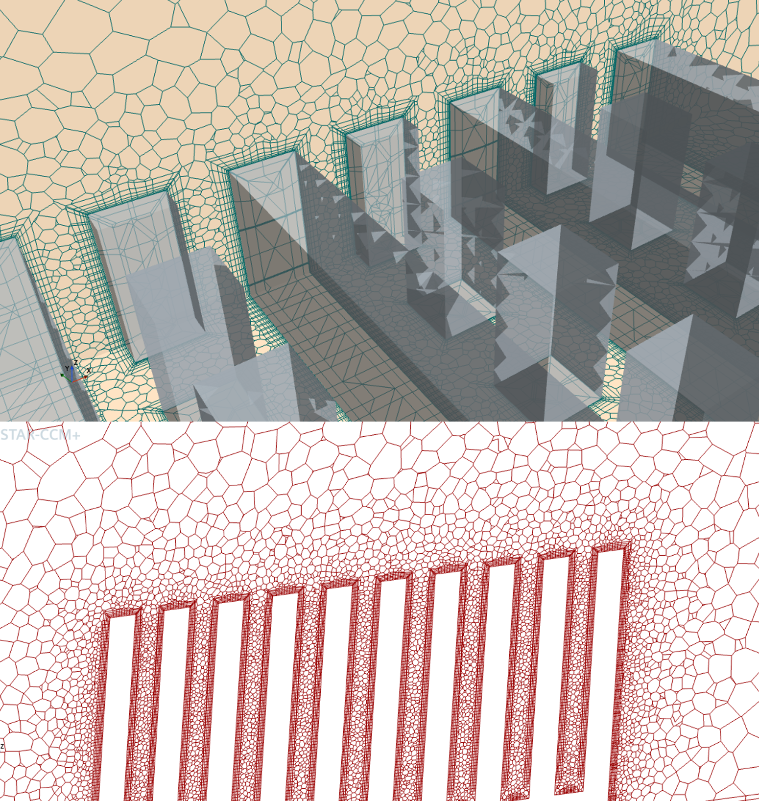

Temperature contour - Natural convection around a cylinder

Mesh around the Heat Sink and Prism layers

Temperature distribution in heat sink
Project 1: Natural Convection Over a Cylinder
Performed 2D simulation of natural convection over a cylinder in a vertical channel with a constant heat flux of 10 W/m² to the cylinder.
- Implemented prism layers to resolve thermal boundary layer
- Applied mesh refinement in the wake region to capture buoyancy-driven flow gradients
- Analyzed velocity and temperature fields for different Grashof numbers
Simulation details:
- Used Boussinesq approximation for buoyancy modeling
- Used second-order discretization schemes for accuracy
Project 2: Heat Sink Thermal Analysis
This numerical study investigates the thermal performance of a heat sink with hybrid fin-pin geometry, replicating the experimental setup of Haghighi et al. Using STAR-CCM+, I first simulated natural convection conditions matching the reference study, observing insufficient heat transfer rates. I then extended the analysis to forced convection scenario (Re ~ 5000) not covered in the original work. Results demonstrated improvement in Nusselt number under forced convection (5m/s airflow) compared to natural convection, validating the design's potential for active cooling applications.
Key Findings:
- Natural convection showed limited heat transfer capability
- Forced convection (with velocity inlet) significantly improved cooling performance
- Observed turbulence enhancement behind fins leading to increased heat transfer
- Verified results against published experimental data
Technical Implementation:
- Special mesh refinement at fin surfaces to resolve thermal boundary layers
- Applied k-ε turbulence model for forced convection case
- Quantified improvement in Nusselt number between both cases
CFD
Natural Convection
Forced Convection
Heat Transfer
Boundary Layer
Mesh Refinement
ANSYS Fluent
Thermal Analysis